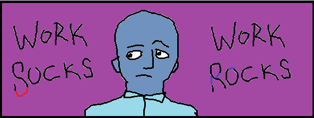

3-2-1: On peacetime, eggs, and finding what you're good at
Sean Kingston, September 9, 2025

Happy 3-2-1 Tuesday!
Here are 3 ideas, 2 quotes, and 1 question to consider this week…
3 Ideas from Me
I.
“It might seem unfair how much money veterans get, especially if they get those sweet disability bucks. But ask yourself- why didn’t you serve? You weren’t interested in advancing the largest empire in world history? And you’re surprised that the people who did were rewarded handsomely? Everybody aligns themselves with some axis of power- what’s yours?”
II.
“There’s a lot of talk about being in touch with your natural impulses. After all, if you like something, then it must be for a reason. But next time you go after something because of its appeal, think about this: Most songbirds’ eggs have some identifying pattern, for example, being light blue with light grey spots. Whatever pattern a species had, the parents tend to take better care of larger eggs with brighter colors and higher contrast- regardless of the egg’s origin. In the light blue example, the best care was taken of bright sapphire eggs with dark black spots twice the size of their normal egg, despite them being impossible for the bird to produce. These exaggerated features that fool the brain are called “supernormal stimuli”. Maybe you’re sitting on a fake egg right now!”
III.
“The invention of the camera is often pointed to as the driving force behind modern art. Once artists became indisputably worse than cameras at capturing portraits and landscapes, they shifted attention to things that cameras couldn’t replicate- the abstract and unrealistic images that fill our heads in spite of photorealistic inputs. Perhaps, as AI grows its lead in writing ability, human writers will shift to the same niche: creating content that doesn’t show what’s really happening, but instead our involuntarily schizoid and neurotic interpretation of the events and ideas around us. Meanwhile the machines can handle the real work.”
2 Quotes from Others
"On a recent walk, I was given a full explanation of the information management systems in a logistics company. The management proudly explained that their system permits them to determine exactly where they had lost a package, in fact thousands every night. My question was “Why do you keep losing packages? If you had a truly capable process you wouldn’t need this expensive safety net. Even worse, the existence of the safety net removes the pressure to make your process capable.” Think of your IT system as a different type of “just-in-case” inventory."
Jim Womack, on how to find packages
“You get born and you try this and you don't know why only you keep on trying it and you are born at the same time with a lot of other people, all mixed up with them, like trying to, having to, move your arms and legs with strings only the same strings are hitched to all the other arms and legs and the others all trying and they don't know why either except that the strings are all in one another's way like five or six people all trying to make a rug on the same loom only each one wants to weave his own pattern into the rug; and it can't matter, you know that, or the Ones that set up the loom would have arranged things a little better, and yet it must matter because you keep on trying or having to keep on trying and then all of a sudden it's all over.”
William Faulkner, on teamwork
1 Question for You
If you were a credit card, what would your number be?
3-2-1: On identity, leadership styles, and understanding how others communicate
John Klinger (LSSMBB/PMP/Scrum Master) , July 29, 2025
Happy 3-2-1 Tuesday!
Here are 3 ideas, 2 quotes, and 1 question to consider this week…
3 Ideas from Me
I.
“We tend to be too risky when building our capital and too safe when preserving our capital. Try to set consistent, common-sense rules and look for cases where you’re straying.”
II.
“A lot is made in the corporate world of being a leader, not a manager. But think of how it feels to be on the receiving end of that for somebody twelve layers down the org chart. Can someone who is led by someone else truly be a leader? Maybe put faith in those above you, or at least God, and focus on being a “manager” of the responsibilities you’re given.”
III.
“Good to Great is one of the most famous management books of all time. It makes basically every mistake that you could make if you’re looking backwards at data and trying to use it to draw conclusions (do focused companies become great or do great companies focus?). The book is still considered a classic to this day and the author feels zero shame about the poor performance of the “great” companies in the years after (e.g., Circuit City, Fannie Mae, Pitney Bowes). As long as you can tell a story, nobody will care.”
2 Quotes from Others
"Of all tyrannies, a tyranny sincerely exercised for the good of its victims may be the most oppressive. It would be better to live under robber barons than under omnipotent moral busybodies. The robber baron’s cruelty might sometimes sleep, his cupidity might at some point be satiated; but those who torment us for our own good will torment us without end for they do so with the approval of their own conscience."
C.S. Lewis, on leadership styles
“More and more Profane was coming to feel a stranger to the world downstairs. It had probably happened as imperceptibly as the fall-off in the alligator population; but somehow it began to look like he was losing contact with a circle of friends. What am I, he yelled at himself, a St. Francis for alligators? I don’ t talk to them, I don’t even like them. I shoot them.
You ass, answered his devil’s advocate. How many times have they come waddling up to you out of the darkness, like friends, looking for you. Did it ever occur to you they want to be shot?
He thought back to the one he’d chased solo almost to the East River, through Fairing’s Parish. It had lagged, let him catch up. Had been looking for it. It occurred to him that somewhere- when he was drunk, too horny to think straight, tired- he’d signed a contract above the paw prints of what were now alligator ghosts. Almost as if there had been this agreement, a covenant, Profane giving death, the alligators giving him employment: tit for tat. He needed them and if they needed him at all it was because in some prehistoric circuit of the alligator brain they knew that as babies they’d been only another consumer-object, along with the wallets and pocketbooks of what might have been parents or kin, and all the junk of the world’s Macy’s. And the soul’s passage down the toilet and into the underworld was only a temporary peace-in-tension, borrowed time till they would have to return to being falsely animated kids’ toys. Of course they wouldn’t like it. Would want to go back to what they’d been; and the most perfect shape of that was dead- what else?- to be gnawed into exquisite rococo by rat-artisans, eroded to an antique bone-finish by the holy water of the Parish, tinted to phosphorescence by whatever had made that one alligator’s sepulchre so bright that night.”
Thomas Pynchon, on becoming what you’re meant to be.
1 Question for You
If you were retarded, would people talk to you any differently than the way they do today?
The Percs of B'Nae Wahlflauer
Chasten Buttigieg, May 1, 2025

The test was supposed to be performative. And yet there is no arguing with the results: there are multiple cells in the host that still possesses knowledge of John Green books. Real funny yeah but we have a schedule and if they’re harboring knowledge of that then how the hell are we supposed to forget the real thing. One bell to unring at a time. We see white blood cells lounging about in the L1 vertebrate. Old-timers club. If they’re not here then who the hell even knows… Anyone here know Melinda? Look at how tensely they hold their shoulders.
It is kind of bogus, right? Art? Nobody feels it the whole time. Otherwise everybody can make it. ‘It’ being, you know, the feeling. A song. You could come up with a song. If you really expressed yourself- I mean, you’ve heard plenty of 4-chord ballads, you can do that in your sleep. You could do better. Throw in a key change. If your lyrics are real then you could make something better… but how long can you feel lyrics for?
Thinking of love songs. Say it’s 4 minutes long. And they were writing it for a day. How could they feel that way all day? They stopped to get food. And then went back to it? At some point the urge to piss was stronger than the urge to express their love. Or God forbid shit. They just have to move past that. But the bigger part I guess is why are you writing if you feel that way? You could just be basking in your lover’s glow. You left them to write. You don’t need the money- surely your song captures that? You’re copyrighting it?
And you know, I mean realistically this isn’t your first rodeo. So you know that the spark you’re feeling isn’t all that special. You could be feeling it for… maybe less than a million girls, but probably over a hundred thousand? Six digits sounds about right. And you can move on. And you get how there’s some pretty basic biological logic that explains every corner case of the problem. So why are you writing like it isn’t true?
But is it about truth? Are we trying to understand ourselves? Or do we look for an ‘out’ to say oh yeah I understand, no need to dwell. I mean the best art… you get goosebumps right? It’s probably been a while. You know how you get bug bites or a rash and let hot water run over it? And well what do we know if we don’t start to get a feeling come over us. Is that the truth? Come on, you’ve given your brain all your attention for years. Don’t you think it’s time to see what the skin has to say?
Our cells replace themselves every eight years. And they say you get over heartbreak in that time. Monet tried to paint the sunrise fast enough to capture that first feeling and if you look at the painting and think ‘Monet’ then he does a full-on casket roll. And every time you listen to a song you experience an echo of the last time you heard it. The truth peeks through the clouds for a second and we’ve proven without a shadow of a doubt that the truth is right here on the surface so why look up?
Or, maybe, I’m making up all this garbage to justify my own personal latest ego nonsense. Compare it to a boy saying “I’ll love you forever” to a girl. Versus me telling you he’s lying. Which sounds truer to you?
Why Send a Man to Jail
Joel "The Warden" Anthony, Jan 19, 2025
Prison is a foundation of liberal society yet in many ways it is a relic of pre-liberal thought. If we only ever believed in pure liberalism, that all men were equal, then the concept of prison would never cross our mind- we would simply assume all men were equally likely to reoffend. If our less enlightened ancestors had never created prisons, we never would’ve formed the trusting society that liberalism requires- in a world of violence, monopolizing violence would not come from votes. With this inconsistency at its heart, I thought I’d look at the fundamental question of prison- “Who belongs there?”- and propose an alternative answer that I believe is an improvement.
First, we must answer the purpose of prison. The simplest understanding would be that prison is to punish- bad people go to jail. However, if we believed it was just about punishment, then why would we disallow “cruel & unusual punishment”? Some would say this ban is even more fundamental to our concept of rights than free speech. However, by any reasonable argument, you would say that as a punishment taking twenty years of a man’s life is magnitudes crueler than simply lashing him or putting him in stockades- so if we judge it as a punishment at all, it goes against one of our core philosophies. Then prison's role in society can only be to reform or banish.
If prison is meant to reform, then who belongs there? People who need further education and assistance to be self-sufficient is part of the answer- but most of these can just work with social workers from home. To require prison, they must be a danger to society as well. To warrant prison, prisoners must require further assistance to stop endangering society. The actual method of reforming is out of scope for this essay, but we will assume that there is a group for whom reform is possible x% of the time.
If prison is meant to banish, it would be for the same group as reform but where we see reform as highly improbable. We could say if someone is in prison until old age, they may as well be fully banished, because the version of them that could threaten society was meaningfully removed.
The old age point is relevant because danger to society is extremely age dependent. From 16-24 there is a huge amount of antisocial activity, then a significantly lower amount from 24-44, then almost nothing afterwards. From this point of view, much of what we would call “reform” is just holding people through their peak violence years and releasing them when they cool down. Banishment would be waiting even longer for their aggression to go down.
The peak crime years starting at 16 is interesting because at that age we still are juveniles- and hold ourselves to a far more relaxed standard. Also interesting is that from 16-18 we’re still under extremely heavy supervision by government employees- just in a school. If anybody does have a history of violence by that age, they have probably spent significant time with counselors and are more likely to have been held back a year, meaning they’ve spent even more time in the school system. The behavior data in the school system increases exponentially with bad behavior.
Now, let’s think about how we put people in jail today. We base it off a single crime, taking history into account. This seems fair- everybody knows the rules, and everybody understands the concept. But imagine if you actually robbed or killed someone- understanding it would be totally against your morals, and you’d feel disgusted- would you really think you deserve prison afterwards? I think most people would think “I’m different- surely you can see that?” and I believe that they would be right to say that. Committing a crime doesn’t change who you are. I think explicitly people understand it is all about likelihood to reoffend. Where I think we are wasting effort is obsessing over the prefix “re”.
My theory is this: If instead of holding our breath and waiting for the inevitable, we simply trusted teachers when consensus is reached that a student is a ticking time bomb, and allowed the state to hold them until reform is noticed- if we trusted the education system to judge criminal status, it would be much more accurate and even more fair than taking a single infraction as proof of character.
Consider the plight of teachers today who know without a doubt that something bad is going to happen with a certain kid. This isn’t about mischievous bullies- these are genuine psychopaths. You don’t think teachers are aware of the patterns? And they can only watch and see who the victim ends up being- powerless until someone is hurt, possibly scarred for life, to be used as a pawn to justify doing what should’ve been done all along.
You might say that those kids can still change- that we don’t know what they’ll do until they do it. You could say the exact same about somebody after they’ve committed an offense. Sure, they’ve committed a murder- but you don’t know that they’ll commit another one until they’ve actually done it? Either way, this is a game of probabilities- and we’re ignoring our most relevant data points as if some are more honorable than others.
The last point is about the principle of it all. What about bias? How do we know their judgement is accurate? Well, we already have parole boards, history, and literal judges as fundamental parts of the system. Who are we kidding, acting like this isn’t always going to be about judgement? Teachers and counselors have seen all the warning signs before. Why are we waiting for an innocent person to be hurt before we treat them as warning signs?
3-2-1: Allocating focus, reframing your mind, and the power of systems
Guru John Klinger, Nov 14, 2023

Happy 3-2-1 Tuesday!
Here are 3 ideas, 2 quotes, and 1 question to consider this week…
3 Ideas from Me
I.
The difference between 110% and 100% is far greater than the difference between 80% and 70%. If you’re stuck on something, don’t be afraid to take a step back and redirect efforts towards something that is less urgent but gives you the ability to go over the top. Often, these extra efforts are all that others can notice.
II.
It can be easy to bemoan the distance your job can take you from your personal goals. After all, you probably won’t even care about the task you’re working on a month from now, let alone when you’re retired. However, every one of your personal goals would be easier to achieve if you were more focused- and your professional tasks would benefit as well. If you keep your eyes open, you might find many aspects of your job that do overlap with what you want to achieve outside of work.
III.
Bringing positive energy into work can only help whatever situation you’re in. Nothing is stopping you from being positive. Maybe there is a voice in your head telling you to hold it back a little bit- but do you really think that voice has your best interest in mind?
2 Quotes from Others
Engineer
F.W. Taylor on the role of systems in our world:
“In the past the man has been first; in the future the system must be first. This in no sense, however, implies that great men are not needed. On the contrary, the first object of any good system must be that of developing first-class men; and under systematic management the best man rises to the top more certainly and more rapidly than ever before.”
Source: Principles of Scientific Management
Writer
Thomas Pynchon on religion and secularism:
"The basic problem," he proposes, "has always been getting other people to die for you. What’s worth enough for a man to give up his life? That’s where religion had the edge, for centuries. Religion was always about death. It was used not as an opiate so much as a technique—it got people to die for one particular set of beliefs about death. Perverse, natürlich, but who are you to judge? It was a good pitch while it worked. But ever since it became impossible to die for death, we have had a secular version—yours. Die to help History grow to its predestined shape. Die knowing your act will bring a good end a bit closer. Revolutionary suicide, fine. But look: if History’s changes are inevitable, why not not die? Vaslav? If it’s going to happen anyway, what does it matter?"
Source: Gravity’s Rainbow
1 Question for You
If you could impersonate anyone from Family Guy, who would it be? What do you think would be the most challenging part of the voice? What quote would you say to get in character?
The 3 Rules of Productivity, According to EVERY Billionaire
Guru John Klinger, Nov 8, 2023
You might not know this, but some people are productive. That's right, they actually do stuff. Not you though. You don't "produce". Unless you're going to take credit for digestion.
You probably don't even know what being productive means! I mean, we're all just living, right?
Well, in one sense, yes. But in other sense, you're just living. Other people are creating.
They're exerting their will on the world and leaving behind "products" that other people can interact with and share.
Thus, some part of their soul leaves their mortal flesh and imbues some immortal mass of hydrocarbon and silicon.
Paying attention now? Yup, I thought so.
I am one of the few who produces, and not only do I produce, but my products beget production.
So while every productive person is linearly more productive than you, I hold a claim to being exponentially more so.
But that exponential gap can be transformed into a linear one, and all it takes is you following 3 rules-
3 simple rules that every productive person follows and you don't.
Rule # 1 : OOPS DISREGARD LOL
Rule # 2 : GUESS THESE DON'T APPLY TO YOU,
Rule # 3 : DO THEY?
The 2nd Decennial John-Dylan Book Recommendation List
Five (5) Books for (4) You (Dylan), Sep 3, 2023

Well, it's that time of the decade again.
Ten years have passed, which means Dylan has finished reading the five books I recommended him in 2013 and is ready for a new stack to keep him company through 2033.
Lucky for him, I've read ten books in the same time frame, so I can choose the five best from those and save him ten years.
Now , in no particular order, let's dive into these long-brewing recs.
House of Leaves - Mark Z. Danielewski
This was the coolest fiction book I've read lately and a real testament to its authors brilliance.
He even insisted on type-setting this himself, which shows his devotion to his vision.
He worked on it for ten years and in that time weaved countless references and layers into this chronology
of a house that's larger on the inside than the outside.
Atomic Habits - James Clear
The past year I've done a lot of management reading and, looking back, this book stands out as the best at spurring self-reflection.
When I read self-management books I'm often left wondering if I should be directing my energy elsewhere.
Like, I don't need to read a book to know some things I should be doing differently.
But the value of this book is that it's such an easy read that you really won't feel like you're using up any energy on it.
As far as the actual science goes, you can probably get a better understanding through Charles Duhigg's "The Power of Habit",
but, to my earlier point, stripping out the details for most is an advantage.
This gives you a solid foundation that should lead to at least one area of your life being improved.
Bonus: This book took corporate America by storm last Christmas so there's a good chance your boss will want to discuss it (if you're so inclined).
Flow - Mihaly Csikszentmihalyi
The reason I was interested in management books was that I felt I needed to do a much better job managing myself.
Also, I figured that solving how to motivate myself would help with motivating others, if that's ever necessary or valuable.
I think this book really gets you close to the truth of motivation and understanding the self.
A common criticism would be that the author bites off more than he can chew, which is fair, but the overall framework he provides is still much accurate than most people's default assumption.
In general, if you're interested in pyschology you should get a lot out of this.
John Adams - David McCullough
Probably the most relatable historical figure I've come across, and with enough primary sources that it doesn't feel like wishful thinking saying that.
Adams' challenges with work, love, and especially friendship are timeless and will have even the staunchest Monarchist celebrating his victories.
The Fountainhead - Ayn Rand
Ayn Rand gets discussed a lot as a political writer, but I find this book to be more of a Romantic experiment.
What if you took everything you found beautiful about love and labor and separated them from what you found ugly?
There's great dystopian worlbuilding (which I'm a sucker for), the characters are compelling, and there's some real poetry to be found in the dialogue.